scenarioBasicOrbit
Overview
This scenario demonstrates how to set up a spacecraft orbiting a celestial body. The gravity can use a point-mass approximation or include the zonal \(J_2\) spherical harmonic term. The following diagram illustrates how the Basilisk components are interconnected.
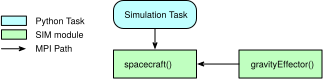
The script is found in the folder basilisk/examples and executed by using:
python3 scenarioBasicOrbit.py
Important
This scenario is currently the most minimal example available. It doesn’t make sense consider returning to the Integrated Example Scripts before moving on.
Making a Copy of the Example Basilisk Scenario Script
To play with any scenario scripts as tutorials, you should make a copy of them into a custom folder outside of the Basilisk directory.
To copy them, first find the location of the Basilisk installation. After installing, you can find the installed location of Basilisk by opening a python interpreter and running the commands:
import Basilisk
basiliskPath = Basilisk.__path__[0]
print(basiliskPath)
Copy the folder {basiliskPath}/examples into a new folder in a different directory.
Now, when you want to use a tutorial, navigate inside that folder, and edit and execute the copied integrated tests.
Enable Terminal Bar to Show Simulation Progress
To enable progress bar, one need to set showProgressBar data member of class SimulationBaseClass to true.
scSim = SimulationBaseClass.SimBaseClass()
scSim.SetProgressBar(True)
Method SetProgressBar should be used to set variable showProgressBar as True with the above statement. After
enabling the progress bar, all the simulation run by scSim.ExecuteSimulation() will show the progress bar in the
terminal.
Vizard Visualization Option
If you wish to transmit the simulation data to the United based Vizard Visualization application, then uncomment the following line from the python scenario script. This will cause the BSK simulation data to be stored in a binary file inside the _VizFiles sub-folder with the scenario folder. This file can be read in by Vizard and played back after running the BSK simulation.
vizSupport.enableUnityVisualization(scSim, simTaskName, simProcessName, gravBodies=gravFactory
# , saveFile=fileName
)
The vizInterface module must be built into BSK. This is done if the correct CMake options are selected. The default CMake will include this vizInterface module in the BSK build. See the BSK HTML documentation on more information of CMake options. By using the gravFactory support class to create and add planetary bodies the vizInterface module will automatically be able to find the correct celestial body ephemeris names. If these names are changed, then the vizSupport.py support library has to be customized. Currently Vizard supports playback of stored simulation data files, as well as streaming the data directly to Vizard. By default the Viz is running in realtime mode with a 1x speed up factor of the data playback. On the bottom right of the Vizard GUI this can be increased or decreased. Further, some display elements such as thruster or reaction wheel panels are only visible if such devices are being simulated in BSK.
While Vizard has many visualization features that can be customized from within the application, many Vizard settings can also be scripted from the Basilisk python script. A complete discussion on these options and features can be found the the Vizard Settings page.
Illustration of Simulation Results
The following images illustrate the expected simulation run returns for a range of script configurations.
show_plots = True, orbitCase='LEO', useSphericalHarmonics=False, planetCase='Earth'
This scenario places the spacecraft about the Earth in a LEO orbit and without considering gravitational spherical harmonics.
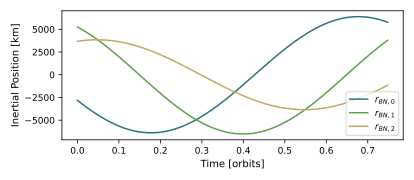
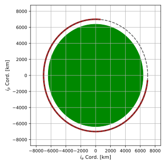
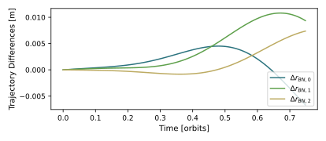
show_plots = True, orbitCase='GTO', useSphericalHarmonics=False, planetCase='Earth'
This case illustrates an elliptical Geosynchronous Transfer Orbit (GTO) with zero orbit inclination.
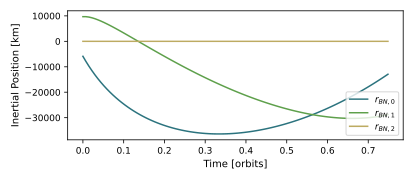
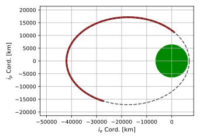
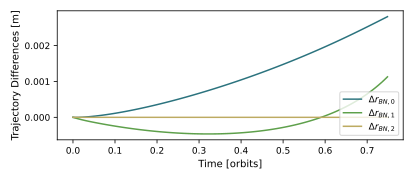
show_plots = True, orbitCase='GEO', useSphericalHarmonics=False, planetCase='Earth'
This case illustrates a circular Geosynchronous Orbit (GEO) with zero orbit inclination.
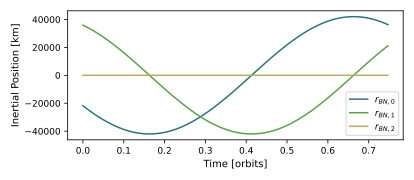
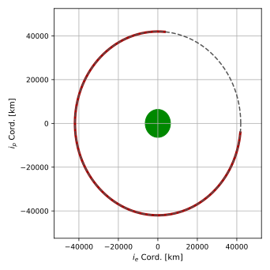
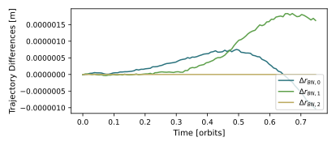
show_plots = True, orbitCase='LEO', useSphericalHarmonics=True, planetCase='Earth'
This case illustrates a circular LEO with a non-zero orbit inclination. In this case the Earth’s spherical harmonics are turned on.
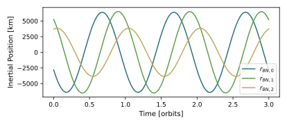
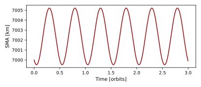
show_plots = True, orbitCase='LEO', useSphericalHarmonics=True, planetCase='Mars'
This case illustrates a circular Low Mars Orbit or LMO with a non-zero orbit inclination. In this simulation setup the planet’s zonal \(J_2\) spherical harmonic term is turned on.
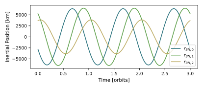
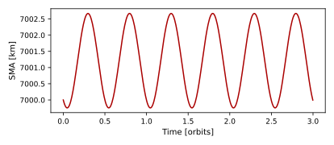
- scenarioBasicOrbit.run(show_plots, orbitCase, useSphericalHarmonics, planetCase)[source]
At the end of the python script you can specify the following example parameters.
- Parameters:
show_plots (bool) – Determines if the script should display plots
orbitCase (str) –
String
Definition
’LEO’
Low Earth Orbit
’GEO’
Geosynchronous Orbit
’GTO’
Geostationary Transfer Orbit
useSphericalHarmonics (Bool) – False to use first order gravity approximation: \(\frac{GMm}{r^2}\)
planetCase (str) – {‘Earth’, ‘Mars’}